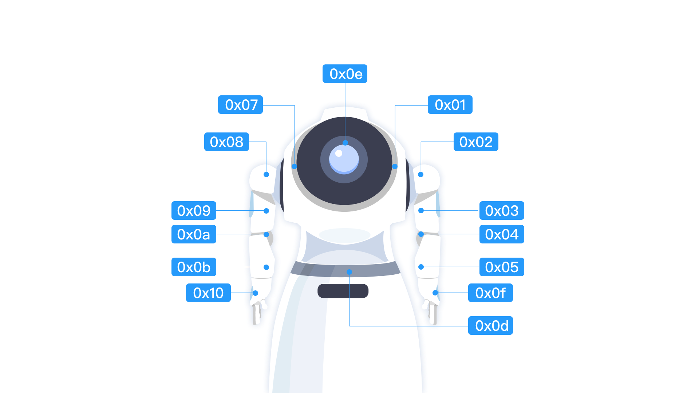

Servo service
The servo service provides the API's ability to call the device's "joints". As the servo service access agent, ServoManager provides the main API of the servo service, which can be obtained through the [RobotContext[ object.
ServoManager servoManager = aRobotContext.getSystemService(ServoManager.SERVICE);
Obtain servo list
To obtain the number of servos and the configuration parameters, you can use the following code:
List<ServoDevice> /* [1] */ servoDevices = servoManager.getDeviceList();
[1]Servo set, ServoDevice is the detailed configuration parameters of the servo, including:
| Attribute getter | Descriptions |
|---|---|
| ServoDevice.id | Servo id |
| ServoDevice.name | Servo name |
| ServoDevice.description | Servo description |
| ServoDevice.minAngle | The minimum angle it can rotate |
| ServoDevice.maxAngle | The maximum angle it can rotate |
| ServoDevice.minSpeed | Minimum speed |
| ServoDevice.maxSpeed | Maximum speed |
| ServoDevice.defaultSpeed | Default speed |
Turn the servo
When the device is required to act like a human, it can be achieved by turning the servo. To rotate the servo, you can use the relative angle or absolute angle. The rotation can be a single task or a serial task, which will be introduced one by one below.
When the servo is rotated using the relative angle, you can specify the angle of relative rotation only, or you can also specify the angle, speed, and duration of the relative rotation.
To only specify the angle of relative rotation, you can use the following code: servo no. 1001 rotates 90 degrees.
promise /* [1] */ = servoManager.rotateBy("1001", 90f) .progress(new ProgressCallback<RotationProgress>() { @Override public void onProgress(RotationProgress rotationProgress /* [2] */) { // Callback the servo's rotation process } }).done(new DoneCallback<Void>() { @Override public void onDone(Void aVoid) { // Callback the servo rotation accomplishment } }).fail(new FailCallback<ServoException>() { @Override public void onFail(ServoException e) { // Callback the servo rotation wrong } });
[1]Return the asynchronous object that is waiting for the rotation progress and results, through which you can wait for or monitor the progress and results, and cancel the rotation process. See Promise for specific usage.
[2] TheRotationProgress object of the asynchronous callback describes the progress information of the servo rotation, including:
| Attribute getter | Descriptions |
|---|---|
| RotationProgress.sessionId | Servo id |
| RotationProgress.angle | The current angle of rotation |
Specify the angle and speed of relative rotation using the following code: servo no.1001 rotates 90 degrees at a speed of 10 degrees per second.
promise = servoManager.rotateBy("1001", 90f, 10f);
Specify the angle and duration of relative rotation through the following code: servo no.1001 rotates 90 degrees within 10 seconds.
promise = servoManager.rotateBy("1001", 90f, 10000);
When the servo uses absolute angle rotation, you can just specify the angle of absolute rotation, or also the angle, speed, and duration of absolute rotation.
To only specify the angle of relative rotation, you can use the following code: servo no.1001 rotates to the position of 90 degrees.
promise = servoManager.rotateTo("1001", 90f);
Specify the angle and speed of absolute rotation through the following code: servo no.1001 rotates 90 degrees at a speed of 10 degrees per second.
promise = servoManager.rotateTo("1001", 90f, 10f);
Specify the angle and duration of absolute rotation through the following code: servo no.1001 rotates 90 degrees within 10 seconds.
promise = servoManager.rotateTo("1001", 90f, 10000);
Specify a rotation option to adjust the action of the servo executing a single task.
For example: servo no.1001 will rotate to 90 degrees after 10 seconds.
RotationOption /* [1] */ option = new RotationOption.Builder("1001") .setAngleAbsolute(true).setAngle(90f).setDuration(10000).build(); promise = servoManager.rotate(option);
[1] The RotationOption object is constructed by RotationOption.Builder, and the instructions are as follows:
| Methods | Descriptions | Default value |
|---|---|---|
| Builder.constructor(servoId) | Specify the servo id when constructing | |
| Builder.setServoId(servoId) | Servo id | Zero-length string |
| Builder.setAngle(angle) | angle | 0 |
| Builder.setAngleAbsolute(angleAbsolute) | Identifier of the rotation method | Relative angle rotation |
| Builder.setDuration(duration) | Duration of rotation, unit: millisecond | 0 |
| Builder.setSpeed(speed) | Speed, unit: degrees per second If there are both duration and speed, the priority will be given to speed |
0 |
Specify multiple rotation options to adjust the action of the servo's execution of serial tasks. The following two implementation methods are available.
For example: servo no.1001 will rotate to the position of 90 degree after 10 seconds, and it will take another 10 seconds to rotate 360 degrees.
// Method 1 RotationOption option1 = new RotationOption.Builder("1001") .setAngleAbsolute(true).setAngle(90f).setDuration(10000).build(); RotationOption option2 = new RotationOption.Builder("1001") .setAngle(360f).setDuration(10000).build(); promise = servoManager.rotateSerially(option1, option2); // Method 2 option1 = new RotationOption.Builder("1001") .setAngleAbsolute(true).setAngle(90f).setDuration(10000).build(); option2 = new RotationOption.Builder("1001").setAngle(360f).setDuration(10000).build(); List<RotationOption> optionList = new ArrayList<>(); optionList.add(option1); optionList.add(option2); promise = servoManager.rotateSerially(optionList);
If you want to know if the servo is rotating currently, use the following code.
boolean isRotating = servoManager.servoManager("1001");
If true is returned, it means that servo no.1001 is currently rotating.
If you want to obtain the current angle of the servo, use the following code.
float angle = servoManager.getAngle("1001");
Release servo
When you need to calibrate the angle of the servo, you need to call the API that releases the servo first, so that the upper layer can no longer access the agent object ServoManager to control the servo during the process of calibration.
When releasing, you can specify one servo or multiple servos, which will be introduced one by one below.
Release one: release servo no.1001.
promise /* [1] */ = servoManager.release("1001").done(new DoneCallback<Void>() { @Override public void onDone(Void aVoid) { // Callback when servo no.1001 is released, you can start calibratiing } }).fail(new FailCallback<ServoException>() { @Override public void onFail(ServoException e) { // Callback the releasing goes wrong } });
[1] Return the asynchronous object that is waiting for the result of releasing, through which you can wait for the result and cancel the release process. See [Promise](../other/async.md) for specific usage.
To release multiple servos at the same time, it can be achieved by the following two methods.
promise = servoManager.release("1001", "1002");
List<String> servoIds = new ArrayList<>(); servoIds.add("1001"); servoIds.add("1002"); promise = servoManager.release(servoIds);
If you want to know if the servo is released, use the following code.
boolean isReleased = servoManager.isReleased("1001");
If true is returned, it means that servo no.1001 has been released.``
Servo monitoring
If you want to perceive the rotation of the servo, you can register a servo monitor, which is achieved using the following code.
RotationListener listener = new RotationListener() { @Override public void onRotationBegan(List<ServoDevice> list /* [1] */) { // Callback the servo starts rotating } @Override public void onRotating(Map<ServoDevice, RotationProgress> map /* [2] */) { // Callback the servo's rotation process } @Override public void onRotationEnded(List<ServoDevice> list /* [3] */) { // Callback the servo completes rotation } }; servoManager.registerRotationListener(listener, "1001", "1002" /* [4] */);
[1]The set of servos that started rotation. See [ServoDevice[ for details of the servos.
[2] The set of servos and their corresponding progress. For details about the progress, see [RotationProgress.
[3] The set of servos that completed rotation
[4] Both 1001 and 1002 indicate the number of servos, which can also be written as a set here, as follows:
List<String> servoIds = new ArrayList<>(); servoIds.add("1001"); servoIds.add("1002"); servoManager.registerRotationListener(listener, servoIds);
If you don't want to perceive the rotation of the servo, use the following code:
servoManager.unregisterRotationListener(listener);
Angle of the head, it provides a suggested value in comparison to the height
At present, only the head servo (id: 0x0e) can be controlled, and the angle range of the head is 180 to 270 degrees. The following table shows the experience value of the angle of the head servo when users of different heights are about 50cm in front of the robot.
| Height (cm) | Angle (°) |
|---|---|
| 180+ | 180 |
| 165-180 | 180-195 |
| 155-165 | 195-210 |
| 145-155 | 210-225 |
| 135-145 | 225-240 |
| 125-135 | 240-255 |
| 115-125 | 255-270 |
| <115 | 270 |
Servo images
Note: The robot 1s has no waist servo 0x0d

Robot servo chart:
| ID | NAME | Note |
|---|---|---|
| 0x01 | LShoulderPith | The first servo on the left arm |
| 0x02 | LShoulderRoll | The second servo on the left arm |
| 0x03 | LShoulderYaw | The third servo on the left arm |
| 0x04 | LElbowRoll | The fourth servo on the left arm |
| 0x05 | LElbowYaw | The fifth servo on the left arm |
| 0x07 | RShoulderPith | The first servo on the right arm |
| 0x08 | RShoulderRoll | The second servo on the right arm |
| 0x09 | RShoulderYaw | The third servo on the right arm |
| 0x10 | RHand | Right hand servo |
| 0x0a | RElbowRol | The fourth servo on the right arm |
| 0x0b | RElbowYaw | The fifth servo on the right arm |
| 0x0d | HeadYaw | Waist servo |
| 0x0e | HeadPitch | Head servo |
| 0x0f | LHand | Left hand servo |